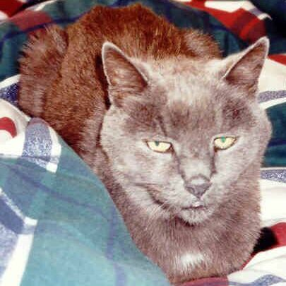

Sadly Poppie has left us on the 17'th of February 2003. I buried her by the camphor tree.
Very very sad to hear about The Wipsie Face girl. I cried buckets. It must be so sad for you too. She has been around for more than half of our lives. She gave me so much joy, I still remember her little mews when she wanted attention at 2 in the morning. And her little pink pootjies - such a Lady. Love the little girl. Tell her I love her. - Christine Weaver

Poppie is my cat and this is her home page, dedicated entirely to her.
I have known her since 1983 and she has slept on my bed for most of her life. She is very demanding, insisting only on the highest quality food and attention.
Poppy loves being told how beautiful and intelligent she is. If you neglect doing this she loses her mood and starts moping.
One does not just talk to Pop, she prefers a higher pitched voice.
In her day Poppie was an amazing hunter, of all the cats I'v known she has caught the most prey. She would often catch a mouse a day. She also loved catching and devouring mossies (sparrows) Mossies are very quick birds and Pop is the only cat I'v known that could catch these birds. I think one of the keys to her success is her extreme patience.
If Poppie wants your attention she gets it. I have often been awaken in the middle of the night with the mew of Poppie. I used to say to myself she will surely eventually stop. She never stops! She also wakes me up by putting her paw on my face, and if nessessary with claws extracted.
My dad often calls Poppie, "River Rat". It is because we found her abandoned at a small river in Vanderjilpark in 1983. We heard her mew but we could not see anything in the long grass. I eventually found her and we all (my two sisters and I) pleaded with dad to keep her. Lucky he said yes and off we went home to Sasolburg in my dad's 1967 Opel Record.
Poppie is a very cautious and not very trusting to anybody. She is especially scared of men. In her younger days we did not see much of Poppie, she was a hunter and no socialite.
Nowdays Poppie spends most of her day sleeping, waking just to be fed. She gets bouts of playfulness now and again, usually she divebombs me while I'm under the blankets.
Poppie is a small cat (about 2.4kg) and is very fussy about her food. She likes chicken and tuna. She also hates eating alone, I must often stand with her, pet her and tell her how nice the food is before she would actually eat. The cattery does not want to take her in when we go away as she refuses to eat.
Poppie sleeps on my side of the bed. She likes my pillow and often sleeps against my head. In winter she insists on climbing inside of the bed, she also insists on sitting on your lap all the time! She can be very talented when it come to staying on a persons lap and only gets off when we stand up, usually vocally expressing her disapproval. If its a bad day she may even attack. Lucky she can't bite or scratch very sore!
Poppie gets called Bitch and Old Cow depending on her mood and ours. My sister calls her "Princess Pink Pootjies", because of her pink feet.
Poppie often waits for us near the gate when we go out and when we return she very vocally expresses her disapproval of leaving her alone for so long.
We don't have that much time together anymore so I try to give her that extra love and attention.
Poppie we love you!